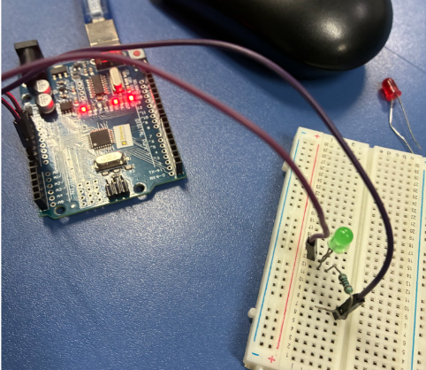
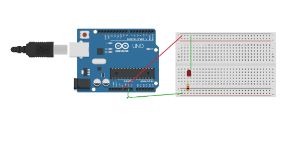
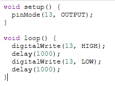
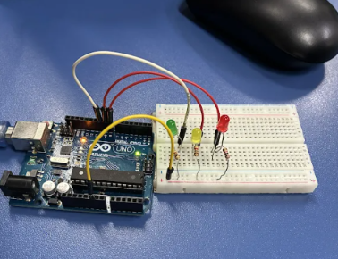
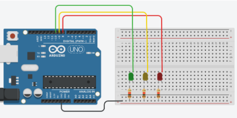
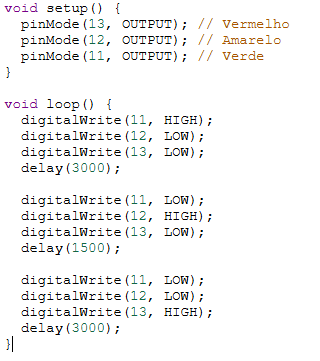

1º Trimestre
Projeto Grand Prix de Inovação
Documento central do projeto Grand Prix. Na janela ao lado, você pode navegar e acessar os links diretos para os arquivos de Escopo, Canvas, Pitch de Vendas e Pitch de Apresentação da nossa solução tecnológica.
Competências trabalhadas: Integração de tecnologias, ideação de soluções inteligentes (hardware e software) e inovação.
ABRIR DOCS EM TELA CHEIA2º Trimestre



Acender LED
Nesta atividade, desenvolvemos a montagem física e o protótipo virtual para acender um LED. Justificativa: Compreender o fluxo básico de energia e portas digitais.



Semáforo
Desenvolvimento da lógica e montagem de um semáforo completo. Justificativa: Aplicar temporizadores e controle múltiplo de portas.


Controle de LED com botão - Desafio Lógica Toggle
Montagem para controle de estado do LED utilizando um push button. Justificativa: Entender leitura de portas digitais e bouncing.